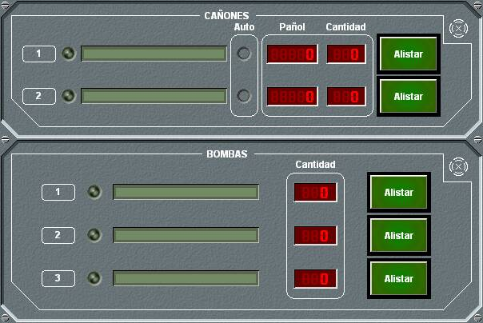
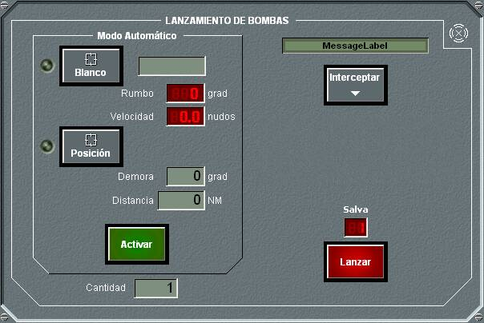

Bombas

El panel de detalle de Bombas se presenta conjuntamente con el de cañones en las unidades aéreas. En este panel se presenta la lista de tipos de bombas disponibles en la unidad, el estado del sistema lanzador de bombas, y la cantidad disponible de cada una de ellas. Pulsando el botón Alistar correspondiente a cada tipo de bomba se abre el panel de Lanzamiento de Bombas para dicho tipo.

Desde este panel el operador puede realizar las siguientes acciones:
El lanzamiento Manual de una salva de bombas se efectuará por orden del operador. Al pulsar Lanzar se efectuará el lanzamiento de la cantidad de bombas seleccionada. Esta acción no se efectúa si la altura de la unidad propia está fuera de los límites de altura para el lanzamiento. Para efectuar este lanzamiento, el operador contará con una ayuda que le indique gráficamente en cada momento el punto de impacto de las bombas, y desde este panel puede acceder directamente al panel de interceptación.
Para activar un lanzamiento Automático, previamente el operador debe realizar una de las dos siguientes acciones:
Una vez realizada una de las dos acciones anteriores, al pulsar Activar, la unidad lanzadora realiza una interceptación a punto fijo o blanco y una maniobra de Cambio de Altura a una nueva altura que permita el lanzamiento. Una vez que la unidad alcance una posición adecuada para el lanzamiento, se efectuará automáticamente un lanzamiento de la cantidad de bombas seleccionada.
Si el lanzamiento es automático y a blanco, el operador podrá introducir una unidad como designador láser para el disparo. Esta unidad debe disponer de esta capacidad. Para seleccionarla se pulsa el botón Designador cuando la unidad está en Hook, o bien se edita el identificador de la unidad manualmente. Para poder efectuar el disparo, es necesario que esta unidad esté detectando al blanco por visual o infrarrojo.
Mientras esté abierto este panel, se presentará en la Pantalla Táctica gráficamente: